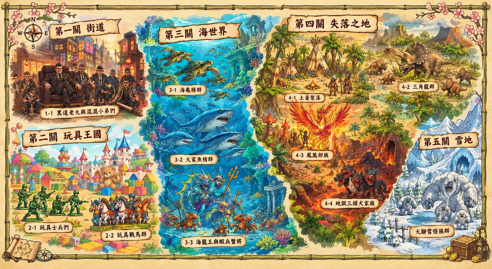

💰 0
除法勇者傳說
主角設定： 冷酷銀髮勇者，右眼戰術眼罩，手持黑曜石雙刃鐮刀，手臂閃爍紅光咒印。
遊戲規則： 擊敗地圖上所有地方的怪物！
✨ 怪物10滴血，答錯加0.5血。前三關都是「除得盡」的題目；第四關開始約 40% 的題目有餘數，要同時填「商」和「餘數」（剛好除盡就填 0）。
✨ 勇者4滴血，答錯扣1血，每題都有限時（越後面的關卡，時間越長）。
✨ 時間加成： 越快答對，攻擊越強（x2、x1.5）。
🎮 兩種玩法： ⚡快速版＝直接輸入答案；🧮教學版＝用直式除法一步步算（時間較長）。兩種模式的進度與星星各自獨立計算，隨時可在地圖上換模式。
✨ 道具： 連對5題獲得「甦醒藥」(死後自動滿血復活)。
挑戰全關卡 5 星評價吧！
🌍 除法冒險地圖 - 關卡選擇
點一下發亮的關卡，勇者就會走過去！


勇者 HP: ❤️❤️❤️❤️
🧪 甦醒藥 x1
關卡 1-1
第一關 街道
怪物
10 / 10
除法勇者
連擊: 0
12 ÷ 3 = ?
剩餘時間: 60s
準備戰鬥！
黑道老大與混混小弟們
我的答案
?
餘數
?